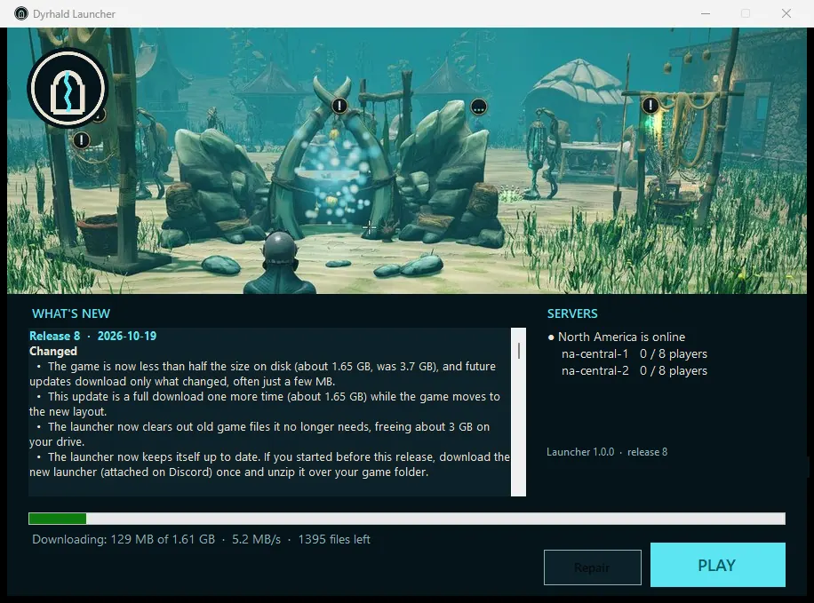
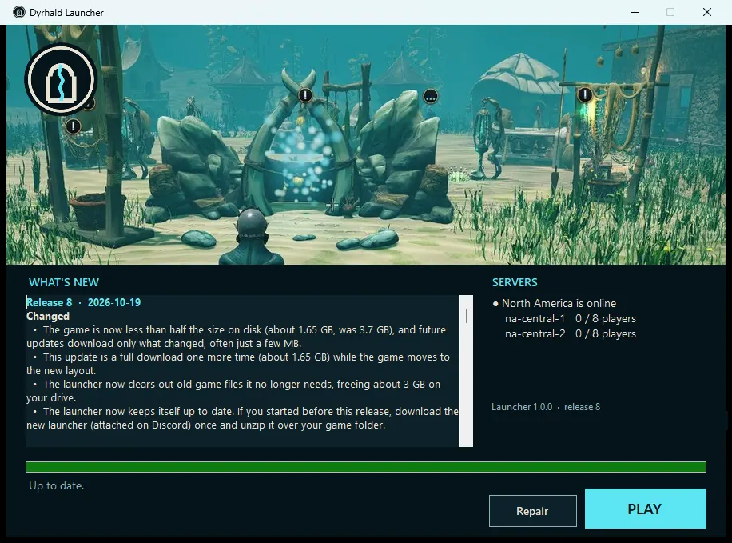

Join the alpha
Come dive with us
Dyrhald is in a small, early alpha for friends and family. If you've been invited, this is how you get in.
-
Join the Discord
Updates, server status and help all happen there. It's also where to tell us what broke.
Join the Discord -
Download the launcher
Download Dyrhald-Launcher.zip, pinned in the Discord's Testing channel. It holds one small Windows app, Dyrhald Launcher.exe. There's nothing else to install.
-
Unzip it into a short folder
Make an empty folder with a short path, like
C:\Games\Dyrhald, and unzip it there. Some game files have long names, so avoid deep folders like Downloads or Documents. If you played before, unzip it into your existing Dyrhald folder instead. -
Run "Dyrhald Launcher.exe"
If Windows shows "Windows protected your PC", click More info, then Run anyway. That warning appears because the launcher isn't code-signed yet.
-
Let it download, then press PLAY
The first time it downloads the game (about 1.65 GB). After that it keeps itself and the game up to date and shows what's new and whether the servers are up. If something seems broken, its Repair button re-checks every file.

-
Make your character
Pick human or fishman, choose your look, and dive in. Your character lives on the server, so it's the same wherever you log in.

Before you start
- You must be 13 or older to play. See our privacy page and terms.
- This is an early alpha. Expect bugs, missing pieces, placeholder art and the odd crash.
- Windows 10 or 11, 64-bit, with a few GB of free disk space. A gaming PC with a dedicated graphics card plays best.
- The game is online only. You need an internet connection, and the server is sometimes down for updates.
- Things change every release, and your character might need a reset someday. We'll always say so first.
Played before with "Play Dyrhald.bat"?
Switch to the new launcher once: unzip Dyrhald Launcher.exe into your Dyrhald folder and run it. It takes over from the old .bat file and clears about 3 GB of old files.
Found a bug?
Press F8 in game. It sends a report with what you were doing straight to us. Short notes like "fell through the floor here" are perfect.